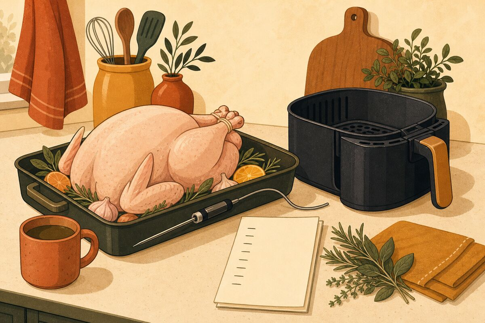

As an Amazon Associate I earn from qualifying purchases. This site contains sponsored product links. Prices and availability are shown on Amazon — check Amazon for current details. Full disclosure
Guide · Thermometers · Season: Holiday cooking
Where does the probe actually go? A holiday-cook answer from the food-safety guidance
Three places in a bird, sideways in thin food, and one rule about what may stay in while it cooks. All of it from USDA FSIS, not from a brand's bullet points.
By the ShopNow Kitchen Desk · Published 2026-11-20 · Updated 2026-11-20 · 3 min read · This category · Sources

Commissioned editorial illustration: a bird in a pan with a leave-in probe, an air-fryer basket waiting for the sides. Not a product photograph.
Two questions decide the thermometer you need this week, and neither of them is about brand: where the probe has to sit, and whether it may stay there while the food cooks. Both are answered by federal guidance rather than by marketing, so this page is mostly quotations with links.
In a whole bird: three places, not one
USDA FSIS says to check a whole bird in three spots — the innermost part of the thigh, the innermost part of the wing, and the thickest part of the breast — avoiding bone in each. For poultry parts, go into the thickest area and avoid the bone. For a thin breast cut, insert the probe through the side so the sensing area reaches the centre. Source: FSIS — Food Thermometers, Where to Place the Food Thermometer.
And one number, in every one of those places: all poultry — breasts, whole bird, legs, thighs, wings, ground poultry, giblets and stuffing — to a minimum internal temperature of 165°F. That figure and the rest below come from the FSIS Safe Minimum Internal Temperature Chart.
Stuffing, and the “check each piece” rule most people skip
FSIS's optimum-safety line: do not stuff whole poultry. If you do stuff it, the centre of the stuffing must reach 165°F.
Check each piece, not one representative — size, quantity and how the food is distributed mean pieces finish at different times.
For something large or irregular, like a roast, check in several places.
Colour and firmness are not indicators of safety. FSIS cites its own consumer research in which 21% of participants relied on visual cues such as colour and grill marks on hamburger patties.
The temperatures people actually look up this week
What you are cooking
Minimum internal temperature (FSIS)
Rest
All poultry, including stuffing and giblets
165°F
—
Ground meats
160°F
—
Beef, pork, veal and lamb — steaks, chops, roasts
145°F
at least 3 minutes
Fresh or smoked uncooked ham
145°F
at least 3 minutes
Fish and shellfish
145°F
—
Eggs, casseroles
160°F / 165°F
—
Rows transcribed from the FSIS chart as read 2026-11-20. Nothing here is a cooking-time recommendation: temperature is the only thing this page claims to know.
“Can I leave it in?” — the rule, then the listings
FSIS: “Do not leave your food thermometer in food while cooking unless the manufacturer's instructions specifically say it can withstand heat and has been designed for this purpose.” So the answer is per unit, and the two units in this shop state opposite things about themselves:
The CHEF iQ Sense Gen3 listing says, in its own title, 3 ultra-thin probes, WiFi range and “1000°F Heat Safe”, and names oven, smoker and air-fryer use. That is the profile of a leave-in probe — the words are the seller's, and the manufacturer's instructions are the document that settles whether yours may stay in.
The ThermoMaven 1 Sec listing describes an instant-read with a bright auto-rotating screen and IP67 waterproofing. Nothing in the fields captured here says it is designed to remain in food while cooking — so read it as spot-check-only until the manual says otherwise.
This is a difference in what each listing states, not a judgement of quality. Both claims sit in the verification register with their source and read date.
Before you buy anything for Thursday
Decide which of the two jobs you need: a reading you take at the end (instant-read), or a number that watches the bird while you do four other things (leave-in with an alarm).
If a leave-in is going near an air fryer or a smoker, check the heat limit the listing states — and the cable, which is the part that gets pinched in a door.
Test the one you already own before the day you need it: the ice-water check takes three minutes and needs a glass.
Write your target temperature on the oven door tape before the turkey goes in: 165°F for poultry, in three places.
The probe you hold and check at the end of the cook. Its listing title claims a one-second reading, ±0.5°F accuracy and IP67 waterproofing — we quote those claims, we have not measured them, and the accuracy claim is the one worth testing at home.
Range Accuracy ±0.5°F (NIST & NSF certified per listing)
The probe you leave in. Three ultra-thin probes wire to a hub that reports over WiFi, and the listing says the probes are heat-safe to 1000°F — that combination is what lets you walk away and still know when to stop.
Capacity 3 probes + hubFootprint 8.43 x 4.69 x 1.93 inches (package); 14.07 ouncesRange Heat safe to 1000°F (per listing)
How this page was made. Written from published listings and official guidance, by an editorial desk — not from hands-on use, so no page here claims testing. Every table row links to its source; anything we could not confirm is left blank and listed on Flagged for review. Sponsored links are marked Sponsored.
Get the next guide when it lands.
One message per new comparison. No offers, no countdowns.
No newsletter is running yet, so this form sends your address nowhere — it is here so the decision about a provider can be made in the open. Until it is made, the RSS feed delivers every new guide, and the disclosure lists what this site collects.